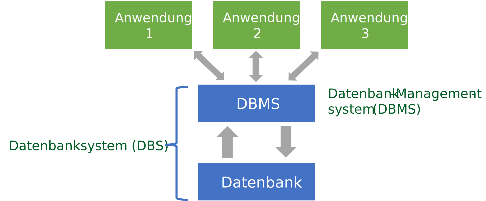

Datenbanktypen#

Eventually, you have to throw the data over a wall.
Pat Helland
Folien#
Grundlagen und Definitionen#
In vielen Softwarelösungen sind die zu verwaltenden Daten so groß, dass es nicht mehr effizient ist, sie in Dateien zu verwalten. Stattdessen speichert man sie in Datenbanken. Datenbanken ermöglichen es verschiedenen Anwendungen, gleichzeitig auf dieselben Daten zuzugreifen, ohne dass Konflikte entstehen. Sie können sehr große Datenmengen verwalten und organisieren diese in strukturierte Formate. Datenbanken sind wie folgt definiert:
Unter einer Datenbank (DB) versteht man die logisch zusammengehörenden Daten, die von einem DBMS (Datenbankmanagementsystem) verwaltet werden
Datenbank und Datenbankmanagementsystem zusammen bezeichnet man als Datenbanksystem
Eine Datenbank umfasst alle logisch zusammengehörenden Daten, die von einem Datenbankmanagementsystem verwaltet werden. Das Datenbanksystem bezeichnet die Kombination aus Datenbank und DBMS. Zur Datenbank gehören neben den eigentlichen Nutzdaten auch alle verwaltungstechnischen Objekte wie Indizes und Logdateien, die das System für eine effiziente Verwaltung benötigt. Die langfristige Speicherung wird durch Persistierung gewährleistet, während Indexierung schnelle Suchvorgänge ermöglicht. Transaktionen sorgen für sichere Datenänderungen, und Logs dokumentieren alle Operationen nachvollziehbar.
Für Ingenieure bedeutet dies beispielsweise, dass Projektdaten, Kostenschätzungen und Zeitpläne zentral verwaltet werden können, wobei verschiedene Teammitglieder gleichzeitig arbeiten können, ohne dass Dateninkonsistenzen auftreten.
Dateien versus Datenbanken#
Bei dateibasierten Systemen strukturiert jede Anwendung ihre Daten individuell nach eigenen Anforderungen. Dies führt häufig zu Redundanzen und Inkonsistenzen, da dieselben Informationen in verschiedenen Formaten mehrfach gespeichert werden. Datenbanken lösen dieses Problem durch eine einheitliche Datenstruktur, auf die alle Anwendungen zugreifen. Das DBMS koordiniert alle Zugriffe und stellt sicher, dass Änderungen synchronisiert und protokolliert werden.
Ein praktisches Beispiel aus dem Bauingenieurwesen zeigt den Unterschied deutlich: Traditionell könnte die Buchhaltung Kostendaten in Excel verwalten, während die Projektleitung separate Zeitpläne in spezieller Software führt. Bei einem datenbankbasierten Ansatz greifen beide auf dieselbe zentrale Datenquelle zu, wodurch automatisch konsistente und aktuelle Berichte über Projektkosten und Fortschritt erstellt werden können.


Die Codd’schen Regeln#
Edgar Codd definierte neun grundlegende Prinzipien für Datenbanksysteme. Seine Motivation war es, klare, überprüfbare Kriterien zu definieren, die Datenbanken erfüllen müssen. Aus dieser Überprüfung leitete er präzise Regeln ab, die sicherstellen sollten, dass ein System Konsistenz, Datenunabhängigkeit und deklarativen Zugriff konsequent umsetzt.
Integration: einheitliche, nichtredundante Datenverwaltung
Operationen: Speichern, Suchen, Ändern
Katalog: Zugriffe auf Datenbankbeschreibungen im Data Dictionary
Benutzersichten: Jeder Nutzer sieht die Daten die er sehen darf in der Art wie er sie sehen möchte
Integritätssicherung: Korrektheit des Datenbankinhalts
Datenschutz: Ausschluss unauthorisierter Zugriffe, nur berechtigte Nutzer
Transaktionen: mehrere DB-Operationen als Funktionseinheit (ganz oder gar nicht)
Synchronisation: parallele Transaktionen koordinieren
Datensicherung: Wiederherstellung von Daten nach Systemfehlern
Datenbanktypen#
Über die Jahrzehnte haben sich unterschiedliche Datenbanktypen herausgebildet, die für unterschiedliche Daten und Anwendungen besonders geeignet sind.

Relationale Datenbanken#
Relationale Datenbankmanagementsysteme dominieren seit den 1980er Jahren und basieren auf dem tabellenorientierten Datenmodell. Jede Tabelle besitzt ein festes Schema mit definierten Spalten und Datentypen. Diese starke Strukturierung macht relationale Datenbanken ideal für gut strukturierte Geschäftsdaten.
SQL dient als Standardsprache für alle Datenbankoperationen. Eine typische Anwendung ist eine Projektdatenbank mit Tabellen für Projekte, Mitarbeiter, Materialien und Kosten, wobei komplexe Abfragen wie “alle Projekte über Budget mit Laufzeit über sechs Monate” einfach realisierbar sind.
Populäre Systeme: Oracle, MySQL, Microsoft SQL Server, PostgreSQL, IBM Db2
NoSQL-Datenbanken#
NoSQL-Systeme verzichten auf das relationale Datenmodell und haben seit 2009 stark an Bedeutung gewonnen. Sie entstanden als Antwort auf die Herausforderungen moderner Webanwendungen, die hohe Skalierbarkeit, Fehlertoleranz und die Verarbeitung von Big Data erfordern. Besonders wichtig ist ihre Fähigkeit, semi-strukturierte Daten wie JSON zu handhaben, die sich nicht in ein starres Tabellenschema pressen lassen.
Populäre Systeme: MongoDB, CouchDB, Cassandra, Redis, Neo4j, Amazon DynamoDB, HBase, OrientDB
Dokumentenorientierte Datenbanken#
Document Stores bieten maximale Flexibilität durch schemafreie Organisation. Datensätze können völlig unterschiedliche Strukturen haben, Spalten können verschiedene Datentypen enthalten oder sogar Arrays aufnehmen. Die Verschachtelung ermöglicht hierarchische Datenstrukturen, die meist in JSON-Format dargestellt werden.
Für Umweltingenieure ist dies besonders wertvoll bei der Dokumentation von Umweltproben, wo verschiedene Standorte unterschiedliche Messparameter haben können. Ein Gewässerstandort könnte pH-Wert, Temperatur und Sauerstoffgehalt messen, während ein anderer zusätzlich Schwermetallkonzentrationen erfasst. Jeder Standort kann seine spezifische Datenstruktur in der dokumentenorientierten Datenbank abbilden.
Populäre Systeme: MongoDB, Amazon DynamoDB, Databricks, Azure Cosmos DB, Couchbase
Key-Value Datenbanken#
Key-Value Stores funktionieren ähnlich wie Python-Dictionaries und speichern einfache Schlüssel-Wert-Paare. Ihre Einfachheit macht sie attraktiv für ressourcenbegrenzte Systeme wie embedded PCs und für die schnelle Entwicklung von Web-Interfaces. Sie eignen sich besonders für Caching-Anwendungen und Session-Management.
In Smart-Building-Systemen können Sensordaten effizient als Key-Value-Paare gespeichert werden. Ein Temperatursensor in Raum 101 würde unter dem Schlüssel “Sensor_Raum_101_Temperatur” den aktuellen Wert speichern, was schnelle Zugriffe für die Gebäudesteuerung ermöglicht.
Populäre Systeme: Redis, Amazon DynamoDB, Azure Cosmos DB, Memcached, Hazelcast
Suchmaschinen-Datenbanken#
Diese spezialisierten NoSQL-Systeme sind für die Suche in Textinhalten optimiert. Sie unterstützen komplexe Suchbegriffe mit booleschen Operatoren, führen Volltextsuchen durch und können Wörter auf ihre Stammformen reduzieren. Die Ergebnisse werden nach Relevanz sortiert und können gruppiert werden, wobei die Suche auf mehrere Server verteilt werden kann.
Umweltbehörden profitieren besonders von solchen Systemen, wenn sie tausende von Gutachten, Berichten und Studien durchsuchbar machen müssen. Eine Suchanfrage nach Grundwasserkontaminationen in Industriegebieten würde alle relevanten Dokumente finden und nach ihrer Relevanz für die spezifische Fragestellung sortieren.
Populäre Systeme: Elasticsearch, Splunk, Solr, OpenSearch, MarkLogic
Graphdatenbanken#
Graph-Datenbanken modellieren Daten als Netzwerk von Knoten und Verbindungen, wodurch sie sich ideal für die Analyse von Beziehungen eignen. Sie ermöglichen Netzwerkanalysen, die Modellierung sozialer Strukturen und die Entwicklung von Empfehlungssystemen.
Bei Bauprojekten können Graphdatenbanken die komplexen Abhängigkeiten zwischen Infrastrukturelementen abbilden. In einer Stadtsanierung würden Knoten Straßen, Gebäude und Versorgungsleitungen repräsentieren, während die Verbindungen die Abhängigkeiten zwischen den Sanierungsarbeiten darstellen. Dies ermöglicht eine optimale Planung der Arbeitsreihenfolge.
Auswahlkriterien für Datenbanktypen#
Die Wahl des geeigneten Datenbanktyps hängt von mehreren Faktoren ab. Strukturierte Daten mit klaren Beziehungen eignen sich für relationale Datenbanken, während flexible oder sich ändernde Datenstrukturen NoSQL-Lösungen favorisieren. Skalierungsanforderungen spielen eine wichtige Rolle, ebenso wie die Komplexität der benötigten Abfragen.
Moderne Infrastrukturprojekte nutzen häufig mehrere Datenbanktypen gleichzeitig. Ein Smart-City-Projekt könnte relationale Datenbanken für Verwaltungsdaten, Graphdatenbanken für Verkehrsflussanalysen, Key-Value-Stores für Sensor-Caching und Suchmaschinen-Datenbanken für die Dokumentenverwaltung kombinieren.